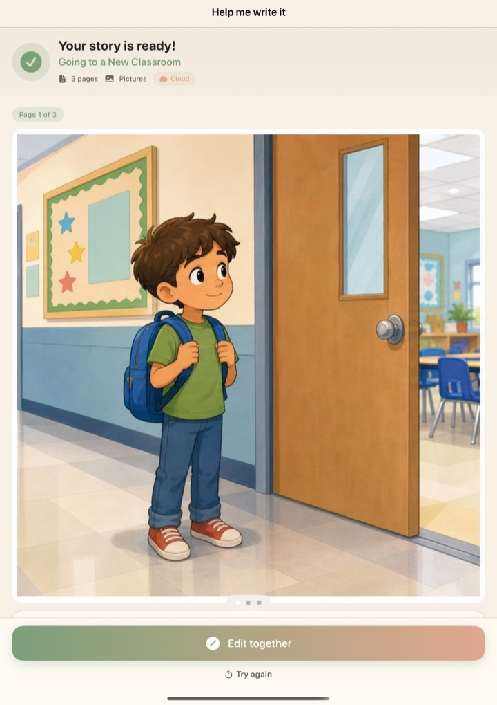
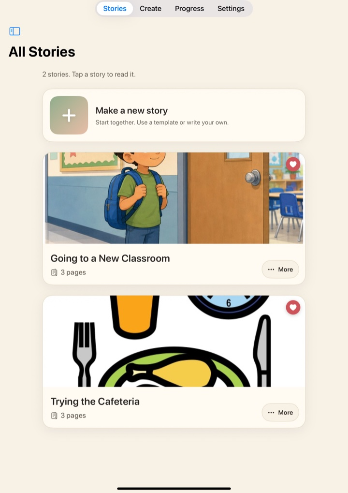
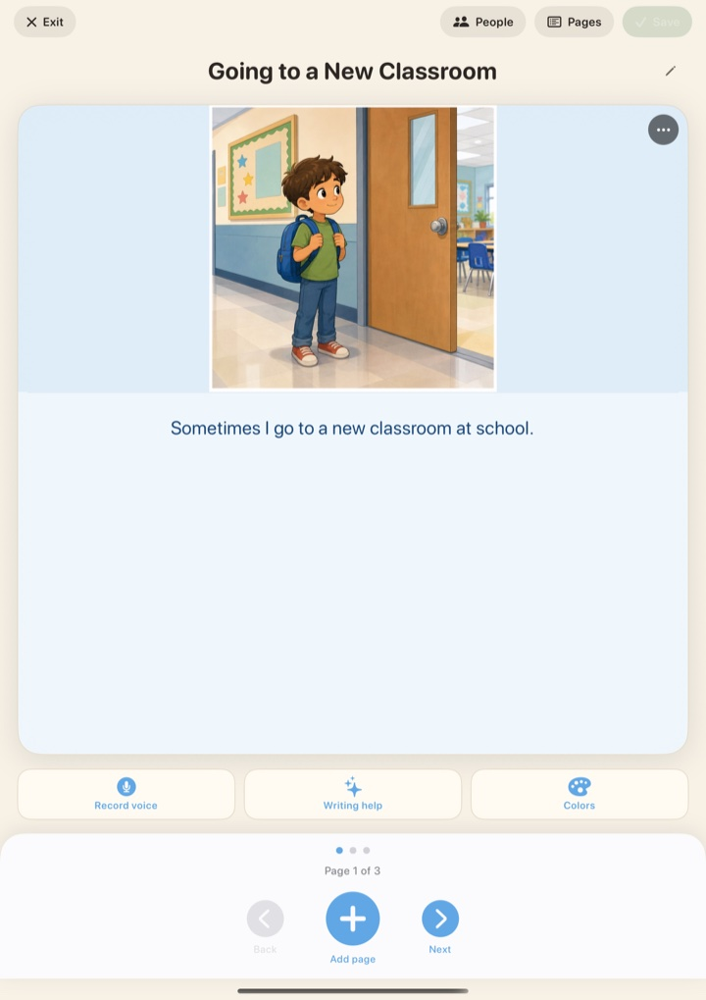
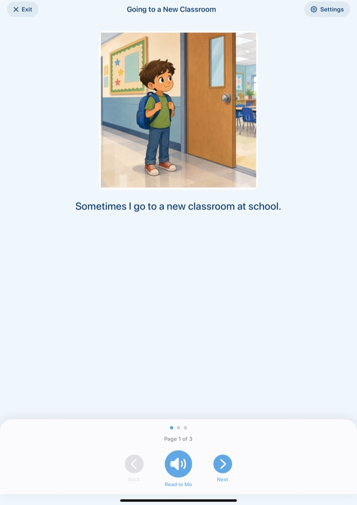
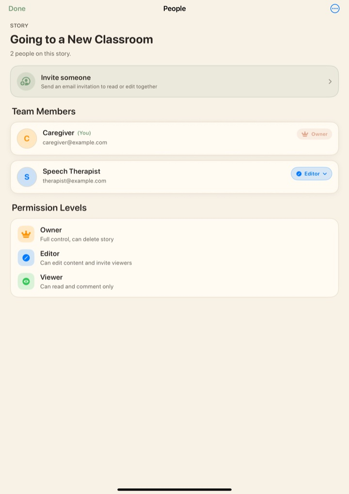
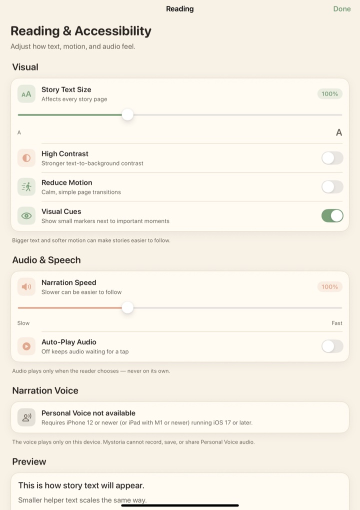

Their story.
Their way.
Mystoria creates personalized social stories that help autistic children navigate daily life with confidence and joy.
Mystoria creates personalized social stories that help autistic children navigate daily life with confidence and joy.
Every feature in Mystoria is grounded in research and designed to make a real difference in your child's daily life.

Describe a situation and Mystoria drafts a complete, illustrated social story in seconds.

Every story your child has created, gathered in one calm, easy-to-browse place.

Fine-tune any page: rewrite the text, swap pictures, record a voice, adjust the colors.

Read together with large illustrations and gentle narration, one page at a time.

Invite caregivers, teachers, and therapists with clear owner, editor, and viewer roles.

Tune text size, contrast, motion, and narration speed to suit every reader.
Mystoria follows Carol Gray's Social Story criteria — the gold standard used by therapists and educators worldwide since 1991.
Social Stories are short, personalized narratives that describe a situation, skill, or concept in a way that is meaningful and supportive for autistic individuals. They use specific sentence types and ratios to present information gently and accurately.
Unlike generic children's stories, Social Stories follow strict criteria that make them effective as an evidence-based intervention — and Mystoria enforces these criteria automatically.
Stories use "I" and "my" to help the child connect personally with the narrative.
At least 80% descriptive and perspective sentences, with gentle suggestions — never commands.
Describes what to do (not what not to do), using concrete words — no idioms or metaphors.
Uses qualifiers like "sometimes" and "usually" — creating safety, not pressure.
Creating a personalized social story takes just a few taps.
Tell Mystoria about the routine or situation your child needs help with — a doctor visit, a new classroom, bedtime.
Add your child's name, preferences, and comfort level. Mystoria adapts the language and detail to fit.
Share the story with your child before the event. Revisit it anytime to build familiarity and confidence.
We're conducting a research study to understand how social stories can better support autistic children and their families. Your participation makes a difference.
Learn About Our StudyMystoria is on its way to the App Store.
Mystoria is in development with our research participants. Add your name and email and we'll send you a single message the day it launches on the App Store. No newsletter, no spam.